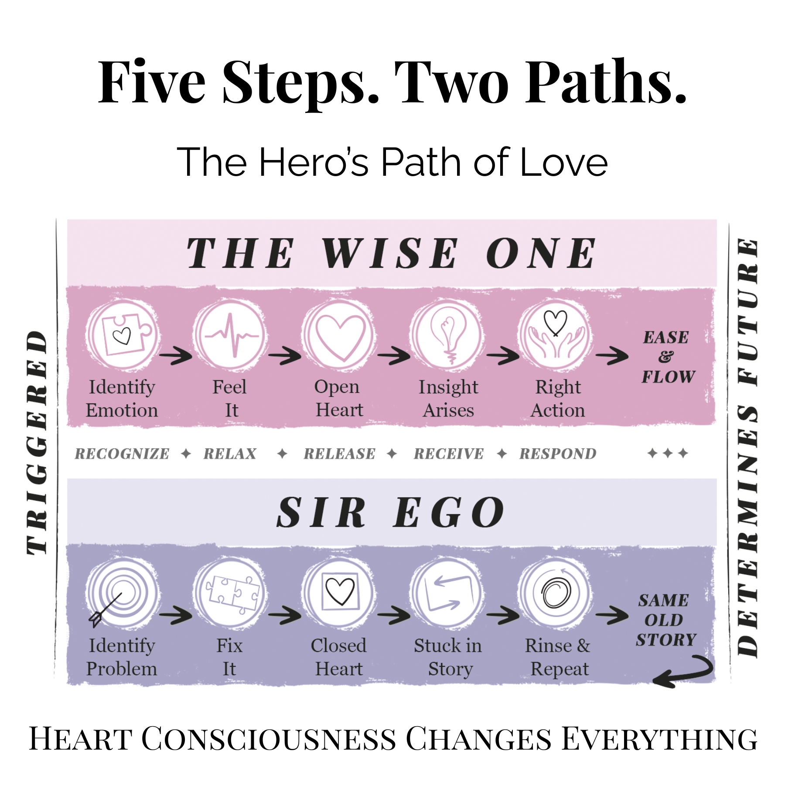

Kindred Lights
Kindred Lights
When you feel lost, take the hero's path. Through your open heart. To your highest wisdom.
If the Wise OneYour higher self. Already home. has been available every moment of your life, why do you need five steps to reach her?
Because the trigger hijacks Sir EgoYour ego. The hero with the wrong map. before she can get a word in.
When the alarm fires, something ancient and automatic takes over. The body floods. The story assembles. The imperative arrives — and suddenly there is no time for the quiet voice of the Wise One. There is only the threat, and the response, and the absolute certainty that something must be done right now. This is a nervous system doing exactly what nervous systems were designed to do in the face of danger.
The problem is Sir Ego cannot tell the difference between a saber-toothed tiger and a text message that landed wrong.
Sir Ego experiences the triggered moment as an emergency. In an emergency, you don't pause and consult. You act. You brace for action and steel your heart. And the Wise One can only be heard through an open heart — which means the very mechanism of the emergency response closes the door she would have spoken through.
This is why we need a practice. To build the ability to hear her in the moments when the alarm is loudest. To create just enough of a pause between the trigger and the response that the Wise One can get through. The Five Steps are that practice.
When the trigger fires, the heart closes. Not metaphorically — physically. The tightening in the chest, the narrowing of the breath, the sensation of something locking down. It is a muscle doing exactly what muscles do when threatened: contracting before it can open.
The sword lashes out to fix it. The shield locks down to survive it. Both are the closed heart doing the only two things it knows how to do when the moment feels like too much. And the pendulum swings both ways — charge in with the sword, get nowhere, retreat behind the shield.
Here's what surprised me when I finally understood this: the heart is doing its job. It tightens instinctively, protectively — just like a muscle in a deep stretch. The way through is to breathe into it. Intentionally, gently, with a little patience — and the muscle releases. What was locked opens. The heart works exactly the same way.
The open heart is the doorway through which the Wise One enters. And what she brings is something neither the sword nor the shield has ever been able to deliver: the response that actually works. Fresh insight. The right words. The right action. The right timing. The move that serves what you were trying to protect in the first place.
Sir Ego has been trying to get there his whole life. He just didn't know the door was in his own chest.
This is heroic love.
Five steps. Each one a living, breathing, repeatable practice you can use today — right in the middle of the next triggered moment. Each one tested in the laboratory of a real life with real stakes and real mess. Each one designed to do one thing: get the heart open enough for the Wise One to get through.

Every trigger opens two paths. The Fix-it Path is the one Sir Ego has walked his whole life — closed heart, stuck in story, ineffective reactions, back onto the merry-go-round. The Feel-it Path is what the Five Steps open — open heart, insight, wise words and actions, a new inner world that reshapes the outer one.
Your level of consciousness changes everything. When the lesson goes unlearned, life sends it again — louder.
Notice where something in you relaxes — that's a step you already understand somewhere in your bones. Notice where something tightens — that's exactly where your practice needs to go. The resistance is always information.
And notice that the steps move in order for a reason. You can't Release what you haven't Relaxed. You can't Receive what you haven't Released. The sequence is the teaching. Trust it even when — especially when — Sir Ego wants to skip ahead to the part where everything is already fixed.
Each step is a practice, not a formula. You'll get better with repetition, and the practice itself will evolve with you. Here is the work, named plainly.

Sir Ego's VersionSir Ego's version of recognition is identify the problem. The trigger fires and he reaches for his fixing tools before he has even noticed what has happened in himself. Or he does the opposite — refuses to name it, calls it something more manageable, tells himself I'm fine, it's not a big deal, I'm just tired. Both moves skip the noticing so he can get to the doing. But skipping the noticing skips the entire practice.
The Wise One's VersionThe trigger has fired. Something about this moment — a word, a tone, an email, a memory — has crashed Sir Ego's ScriptSir Ego's rules about how life should go. into what's actually unfolding. The body is bracing. The story is assembling. The imperative to fix, defend, or flee is already loading.
Recognize it. Name what's happening, even if only to yourself. I am triggered. Here it is again. You don't need to know why yet. You don't need to solve it. You only need to see that you are in it. That recognition is the first inch of daylight between you and the automatic response.
Sir Ego's VersionSir Ego's version of relax is stay ready. He hears "relax" and something in him goes no — if I relax I lose. He braces. The shoulders lock, the chest tightens, the jaw sets. He may look calm on the outside; inside, everything is clenched for battle. His script has him believing that softening the guard means the danger wins. Which means the muscle of the heart stays contracted, and the Wise One's voice stays out of reach.
The Wise One's VersionThis is the moment of choice. Pause now, or pay later. The muscle of the heart has contracted — the way any muscle contracts in a deep stretch. The way through is to breathe into it. Intentionally, gently, with a little patience.
Actively open the heart, chest, and shoulders against their tendency to close. Have the patience to wait until right thinking, right words, and right action can arrive. You are creating the pause the Wise One needs to be heard.
Sir Ego's VersionSir Ego's version of release comes in two flavors, and he oscillates between them. One is discharge — vent it, argue it, punish whoever triggered him, get the charge out onto someone. The other is suppression — stuff it down, pretend it's not there, add another layer of muscle over the top. Neither actually releases anything. Both keep the charge stored in the body, waiting for the next round of the same shape.
The Wise One's VersionTranscend the blocked emotional energy — neither suppressing it nor expressing it at whatever triggered it. Don't go into the story. See the ego upset from the Silent WitnessThe Wise One, watching. Heart open.. Feel it. Don't fix it.
It's only energy. Better out than in. Whatever is there, let it flow. Open heart good; closed heart bad. The charge that has been stored in the body for this moment can finally move through — and when it does, something underneath it becomes available.
Sir Ego's VersionSir Ego's version of receive is deliver the answer I already prepared. He does not really receive, because he does not believe anything better than his own analysis is available. The counter-argument was assembled while the trigger was still landing. The scripted response was drafted before any pause could have created space for something else. From his position, receiving looks like delay — and delay looks like risk.
The Wise One's VersionWith the charge moving and the heart open, the Wise One — who has been waiting this whole time — can finally be heard. Clear, unambiguous insights arrive without doubt. The right understanding of the situation. The thing you couldn't see from inside Sir Ego's urgency.
Where did that come from? Of course that will help. I knew that before, in my head, but now I know it in my heart. The quality is distinct from ordinary thinking. It feels like remembering something you already knew at a deeper level than Sir Ego operates.
Sir Ego's VersionSir Ego's version of respond is execute the script. The line is delivered. The move is made. The words are perfectly calibrated to win the point, protect the position, correct the other person, or restore what he sees as the right order. Sometimes it appears to work — he got his way, the argument closed, the outcome landed in his favor. It rarely delivers what he actually wanted underneath the wanting.
The Wise One's VersionNow the response arrives. Not Sir Ego's rehearsed counter-move, not the thing you would have said from the closed heart — but the thing that serves what you were actually trying to protect in the first place. Right words, right action, right timing, spontaneously arising at the right moment.
No thinking, rehearsing, or trying to sound a certain way. Surprisingly inspired. Well received. Effective. You are giving and receiving the gift of love, compassion, blessing, and bonding — because the closed heart that would have distorted it all is open now.
REALIZE the perfection in the pain. The shift. The calm. The pearl.
A one-page reference with the full cues for each step — the thoughts to watch for, the heart-state to cultivate, the quality of the arrival. Print it. Keep it handy. Use it in the moment.
The Five Steps are not a new teaching. Every major wisdom tradition has pointed at the same mechanism, in its own vocabulary. The Buddha named the misperception behind the suffering. Patanjali named the stilling of the mind's fluctuations. A Course in Miracles named fear as a call for love. The Yoga Sutras named liberation through letting go. The Bhagavad Gita named action arising from being, not from striving.
The Five Steps are those same truths, translated into English plain enough to use at three a.m. when the alarm is already firing. What follows is not a crediting of sources. It's a map of what every tradition was already teaching — so that you can carry whatever tradition calls to you, and find it alive right here in the practice.
These are companions, not gatekeepers. You already carry whichever of them speak to you. The Wise One speaks every language and answers to every name. The practice is the same practice. The door is the same door.


This room is the overview. The book is the full practice — each step given its own two chapters, one tracking what Sir Ego does when he's running the show, one showing what the Wise One offers instead. Every move tested in the laboratory of a real life with real stakes and real mess.
Built to work when nothing else does. For the person who has done the inner work, knows the cosmic picture, and still can't find the signal when the alarm fires.